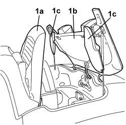
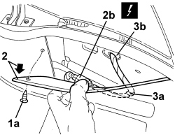
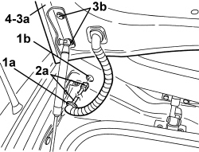
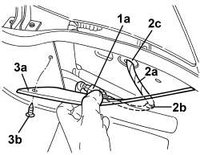

7210E54 R.R. BOOT
- Path
- Procedures > 72 PANELS AND FRAMES > 7210 REMOVING-REFITTING > 7210E EXTERNAL PARTS > 7210E54 R.R. BOOT
- Kind
- repair procedure (removal / refitting; the operation number is the code)
- Applies to
- engines: 2.2 JTS, 3.2 JTS; all production periods
- Interactive page
- https://sloeber94.github.io/elrnDB-aBrrSpdr/en/#/946004209
Applies to: engines: 2.2 JTS, 3.2 JTS; all production periods
 Removing
Removing
 Refitting
Refitting1. Using the hood electric control, place the 5th arc (1a) in the raised position (as illustrated), the hood compartment cover (1b) in the fully raised position and the side covers (flaps) (1c) in a lowered position (as illustrated).

Applies to: engines: 2.2 JTS, 3.2 JTS; all production periods
1. Working in the hood housing compartment on the left hand side, release the retaining button (1a) using the special tool.
Tool | Description | Function | Validity |
|---|---|---|---|
1823015000 | Knife | Retainer removal |
2. Move the edge (2a) of the side trim slightly and disconnect the electrical connection (2b) for the boot lid wiring.
Description | Component |
|---|---|
REAR/BOOT COUPLING |
3. Disconnect any wiring retainers (3a) as far as the partition (3b) passage.

Applies to: engines: 2.2 JTS, 3.2 JTS; all production periods
- Discharge the hydraulic system pressure.
Op. 0010T79 HOOD HYDRAULIC SYSTEM - DISCHARGE AND RESTORE PRESSURE
1. Open the boot lid using the emergency control (1a) after having opened oddments compartment behind the left seat.

Applies to: engines: 2.2 JTS, 3.2 JTS; all production periods
1. Release the cable duct (1a) through the opening (1b) in the partition.
2. Extract the wiring (2a) through the opening (1b).
3. Support the boot lid (3a) appropriately, then undo the bolts (3b) on both sides of the vehicle.
4. Keep the boot lid.

Applies to: engines: 2.2 JTS, 3.2 JTS; all production periods
- If necessary, strip the boot lid.
Applies to: engines: 2.2 JTS, 3.2 JTS; all production periods
Refitting
Removing- Check that the boot lid is not damaged.
- Position the boot lid.
- Screw in the boot lid fixing bolts without tightening them.
- Fit the wiring in the passage in the partition.
- Fit the cable duct in the opening in the partition.
Op. 7025B10 BOOT LID - ALIGNMENT
- Close the boot lid.
1. Move the hood manually and place the 5th arc (1a) in the raised position (as illustrated), the hood compartment cover (1b) in the fully raised position and the side covers (flaps) (1c) in a lowered position (as illustrated).

Applies to: engines: 2.2 JTS, 3.2 JTS; all production periods
1. Working in the hood housing compartment on the left hand side, connect the electrical connection (1a) for the boot lid wiring.
2. Position the wiring (2a) and connect any wiring retainers (2b) as far as the partition passage (2c).
3. Position the side trim (3a) and attach the retaining button (3b).

Applies to: engines: 2.2 JTS, 3.2 JTS; all production periods
- Restore the hood hydraulic circuit pressure.
Op. 7030H03 HOOD MANUAL OPENING FOLLOWING DEACTIVATION OF HYDRAULIC SYSTEM - CARRY OUT PROCEDURE
- Close the hood using the electric control.